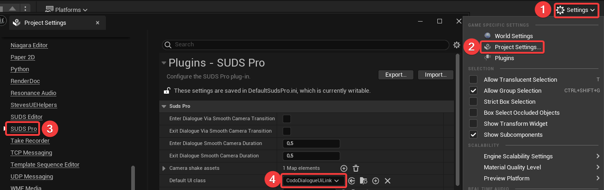

Integrating SUDS Pro using C++
I have recently discovered the SUDS Pro dialogue system and was amazed by how many of my concerns regarding game dialogue it resolves. Not only that, SUDS Pro also takes care of a lot of related tasks that I did not even think of yet, such as triggering camera shake from dialogues. All in all, one can say that I am very happy with the purchase.
In this article series, I am documenting my way of adapting the dialogue system. It does not aim at developing basic understanding for SUDS Pro. There is an excellent documentation page as well as a great example project that will help you with that.
This article will be about the boilerplate code that is necessary to allow for a C++ based user interface for SUDS Pro.
Custom integration
By default, SUDS Pro assumes that you keep the dialogue UI in Blueprint. The reason is that default way of connecting your UserWidget to the dialogue is by implementing the Blueprint interface BP_SudsProDialogueWidgetInterface, an act only possible in Blueprint. You cannot implement a Blueprint interface in C++.
Probably, most people will be just fine with that. However, I like to keep all the logic of my UIs in C++ for better maintainability and diff-ability.
Luckily, it is possible to implement a custom way of communicating with your user interface. In short, it is necessary to offer a C++ based dialogue widget interface and implement a child class to USudsProUiLink that makes use of that C++ interface.
Let’s start with the latter.
C++ based Dialogue Widget Interface
The interface itself is straightforward since there is nothing to do except declaring the interface methods. However, the Unreal interface system has some peculiarities. Leaving the interface methods unimplemented and declaring them PURE_VIRTUAL will lead to an error when the corresponding method is called of a class implementing this interface.
An alternative would be to mark the methods BlueprintNativeEvents. However, this would allow implementing them in Blueprint. For Blueprint usage we already have BP_SudsProDialogueWidgetInterface.
The solution is to include an empty definition for each method.
CodoDialogueWidgetInterface.h:
#pragma once
#include "CoreMinimal.h"
#include "SUDSDialogue.h"
#include "UObject/Interface.h"
#include "CodoDialogueWidgetInterface.generated.h"
// Auto-generated class - this class does not need to be modified.
// Markup signalizes: For use in C++ only. This is not strictly necessary. But you can use the
// BP_SudsProDialogueWidgetInterface instead if you want to work with BP based UIs.
UINTERFACE(MinimalAPI, NotBlueprintable, meta = (CannotImplementInterfaceInBlueprint))
class UCodoDialogueWidgetInterface : public UInterface
{
GENERATED_BODY()
};
/**
* C++ based equivalent of the Blueprint based BP_SudsProDialogueWidgetInterface as included in
* SUDS Pro. This allows for UserWidget with C++ base class.
*/
class CODOUI_API ICodoDialogueWidgetInterface
{
GENERATED_BODY()
public:
// These methods are not declared pure virtual because there will be an error when the
// corresponding method is called of a class implementing this interface.
// The next best thing that does not cause problems with the way Unreal interfaces work is to
// have an empty definition. This is the reason for the empty definitions {} of these methods.
/**
* The method that is called at the beginning of a dialogue.
* The widget should be setup and added to the viewport.
* @param Dialogue The dialogue being started.
* @param PlayerController The owner of the created widget
* @param bShouldTakeOverInput Indicates if input shall be switched to UI only
*/
UFUNCTION()
virtual void InitDialogueWidget(USUDSDialogue* Dialogue,
APlayerController* PlayerController,
bool bShouldTakeOverInput)
{
}
/**
* Called at the end of the dialogue. Remove the widget from the screen.
* @param Dialogue The dialogue being finished.
* @param PlayerController The owner of the created widget
* @param bShouldRestoreInput Indicates if the input must be switched back to the regular controls
*/
UFUNCTION()
virtual void ShutdownDialogueWidget(USUDSDialogue* Dialogue,
APlayerController* PlayerController,
bool bShouldRestoreInput)
{
}
/**
* Called upon availability of a new speaker line. Get new Text and Speaker Dislpay Name.
* Check for choices or if dialogue is simple continue.
* @param Dialogue Dialogue that has a new speaker line available.
*/
UFUNCTION()
virtual void ShowSpeakerLineInWidget(USUDSDialogue* Dialogue)
{
}
};C++ based UI Widget Link
There is nothing wrong with the BP_SudsProUiWidgetLink. A simple re-implementation of it with the references to the dialogue widget interface changed to UCodoDialogueWidgetInterface is enough.
CodoDialogueUiLink.h:
#pragma once
#include "CoreMinimal.h"
#include "SudsProUiLink.h"
#include "CodoDialogueUiLink.generated.h"
class UUserWidget;
/**
* Custom implementation of the SudsProUiLink class, requiring the CodoDialogueWidgetInterface to be
* used on the dialogue widget. This allows for C++ based UserWidgets.
*/
UCLASS()
class CODOUI_API UCodoDialogueUiLink : public USudsProUiLink
{
GENERATED_BODY()
protected:
UPROPERTY()
UUserWidget* WidgetInstance = nullptr;
bool bHasChangedInputMappings;
public:
// Override all methods of USudsProUiLink to call the according methods of CodoDialogueWidgetInterface
virtual void DialogueStarting_Implementation(USUDSDialogue* Dialogue, bool bShouldTakeOverInput) override;
virtual void DialogueFinished_Implementation(USUDSDialogue* Dialogue, bool bShouldRestoreInput) override;
virtual void ShowSpeakerLine_Implementation(USUDSDialogue* Dialogue) override;
};CodoDialogueUiLink.cpp:
#include "CodoDialogueUiLink.h"
#include "CodoDialogueWidgetInterface.h"
#include "SudsProLibrary.h"
#include "Blueprint/UserWidget.h"
#include "Kismet/GameplayStatics.h"
void UCodoDialogueUiLink::DialogueStarting_Implementation(USUDSDialogue* Dialogue, bool bShouldTakeOverInput)
{
Super::DialogueStarting_Implementation(Dialogue, bShouldTakeOverInput);
const TSubclassOf<UUserWidget> UserWidgetClass = USudsProLibrary::GetDialogueWidgetClass();
APlayerController* PlayerController = UGameplayStatics::GetPlayerController(GetWorld(), 0);
if (ensureMsgf(IsValid(UserWidgetClass), TEXT("The Dialogue Widget class set in the Suds Pro project settings is invalid."))
&& ensureMsgf(PlayerController, TEXT("A dialogue is started without an available player controller.")))
{
WidgetInstance = CreateWidget(PlayerController, UserWidgetClass, FName("DialogueWidget"));
if (ensureMsgf(WidgetInstance->Implements<UCodoDialogueWidgetInterface>(),
TEXT("The supplied dialogue widget class does not implement the ICodoDialogueWidgetInterface, which is required for compatibility with CodoDialogueUiLink.")))
{
ICodoDialogueWidgetInterface* WidgetAsInterface = Cast<ICodoDialogueWidgetInterface>(WidgetInstance);
if (ensure(WidgetAsInterface))
{
WidgetAsInterface->InitDialogueWidget(Dialogue, PlayerController, bShouldTakeOverInput);
}
}
}
}
void UCodoDialogueUiLink::DialogueFinished_Implementation(USUDSDialogue* Dialogue, bool bShouldRestoreInput)
{
Super::DialogueFinished_Implementation(Dialogue, bShouldRestoreInput);
APlayerController* PlayerController = UGameplayStatics::GetPlayerController(GetWorld(), 0);
if (ensureMsgf(IsValid(WidgetInstance), TEXT("Dialog finished at a point of time where there is no dialogue widget."))
&& ensureMsgf(PlayerController, TEXT("A dialogue has finished without an available player controller")))
{
ICodoDialogueWidgetInterface* WidgetAsInterface = Cast<ICodoDialogueWidgetInterface>(WidgetInstance);
WidgetAsInterface->ShutdownDialogueWidget(Dialogue, PlayerController, bShouldRestoreInput);
WidgetInstance = nullptr;
}
}
void UCodoDialogueUiLink::ShowSpeakerLine_Implementation(USUDSDialogue* Dialogue)
{
Super::ShowSpeakerLine_Implementation(Dialogue);
if (ensureMsgf(IsValid(WidgetInstance), TEXT("Speaker line shown at a point of time where there is no dialogue widget.")))
{
ICodoDialogueWidgetInterface* WidgetAsInterface = Cast<ICodoDialogueWidgetInterface>(WidgetInstance);
WidgetAsInterface->ShowSpeakerLineInWidget(Dialogue);
}
}Tying everything together
We need to make our classes known to SUDS Pro. This can be done by settings the CodoDialogueUiLink class as the default UI class in the SUDS Pro part of the project settings.

Lastly, the only thing missing is an actual widget for the dialogue. The next article will be about how to use the newly created interface in a UserWidget (once it is ready).